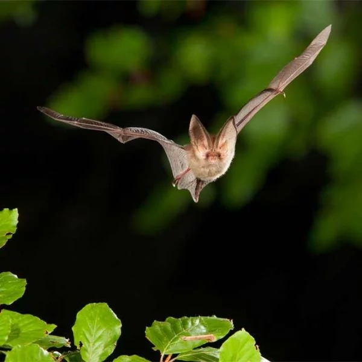

If you have any questions about bats that you need answered immediately – for instance if you have bats entering the living area of your house – you can contact your local National Parks and Wildlife Service Ranger in the Republic of Ireland. Your local wildlife ranger telephone numbers are available from the NPWS Dublin head office at (01) 888 3200 (during office hours). In Northern Ireland you can contact the NIEA.

Our enquiry form will direct you to all the information and contacts you need for grounded bats, development, volunteering, and general advice on bats. Please note that we do not have a telephone support line.